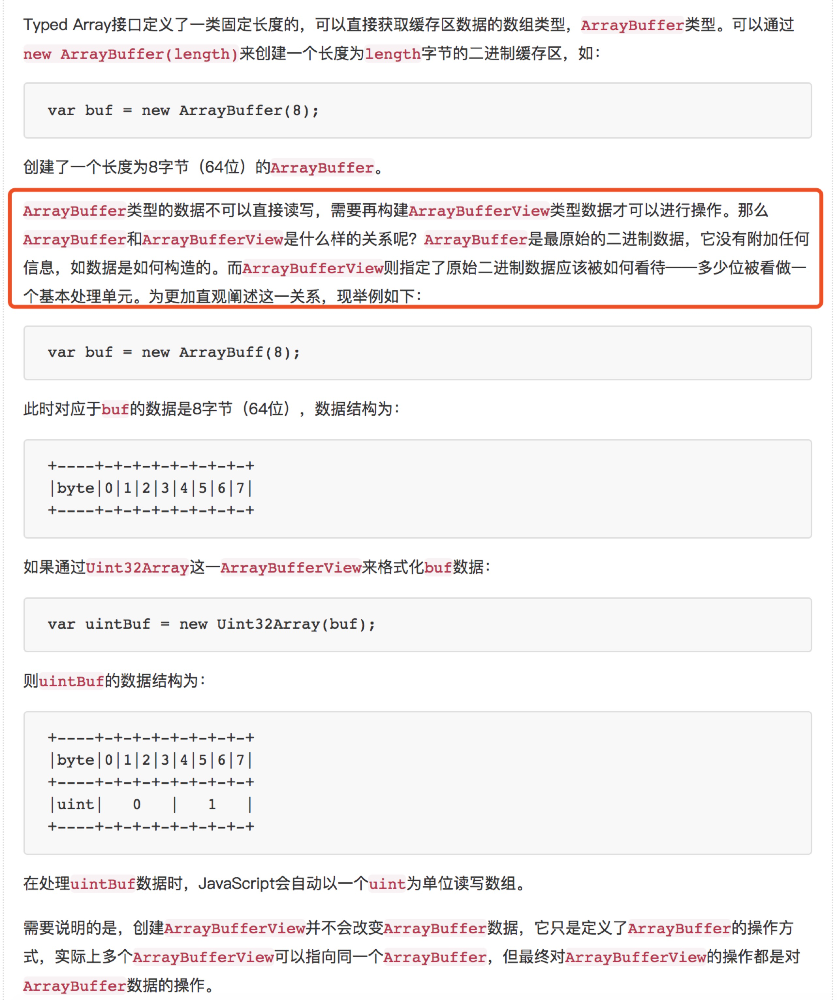
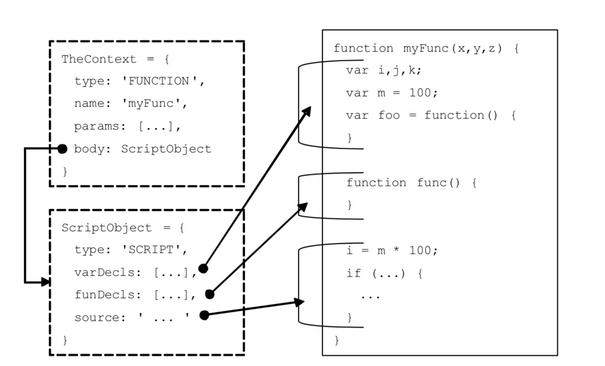
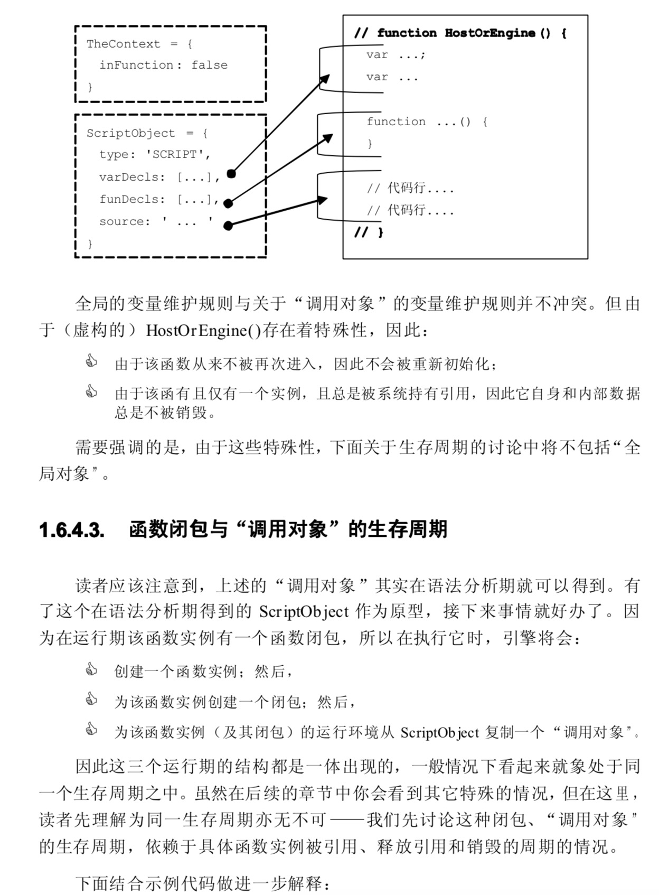
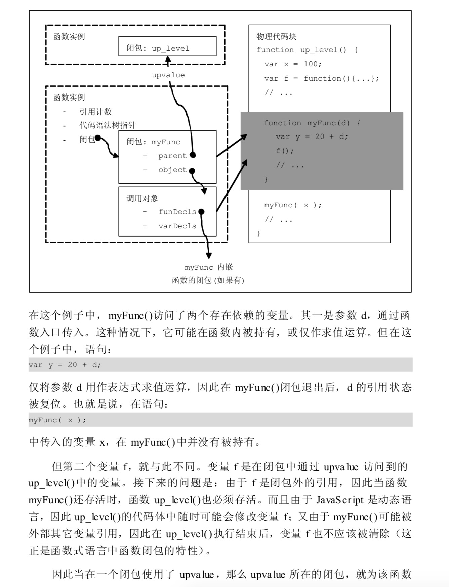

1)先调用对象的valueof()，返回对象自身的值；valueof()仅仅能返回自身值，不会转换值的类型
2)如果对象自身值不是数值，则继续调用tostring()，再调用parseFloat()或parseInt()转为数值；
3）以上都不行，或者值返回NaN，则通过强制方法把对象转为数值，再不成功，返回NaN;
var a=new Boolean(true)
console.log(a.valueOf()) // true
console.log(typeof a.valueOf()) // Boolean
1)空数组，会先调用tostring()=》“”，再将空字符串转为数值0
2)如果数组仅包含一个数字元素，则转换为该数字的数值；[3]*2=6
3）数组包含多个元素或者仅包含一个非数字元素，返回NaN;
1)小数末尾的0会被清除，（0.001000).toString() // '0.001'
2)科学计数法，在条件许可情况下转为浮点数，否则以科学计数法方式输出；
例如：(0.0000000001).toString() //"1e-10"
(1e-10).toString() //"1e-10"
经chrome测试，(1e-6).toString() //"0.000001"
小于-6的均以科学计数法形式输出；
var n=1
function f(){
var n=2
var e= new Function('console.log(n);return n')
return e()
}
console.log(f())//1，1
执行结果证明，Function作用域是动态确定的；函数体里的内容在函数调用前并没有执行，
即函数内部成员是在函数被处理时定义的，如参数变量、局部变量等；但当函数调用完毕以后将释放所有资源；
对于function声明函数来说，依然保存着该函数在预编译时所占据的内存空间；对于匿名函数，则将完全释放；
对于函数直接量来说，由于是静态函数，所以会在系统中保存一根函数结构的备份，以备下次调用。
a = [ [1] [1] ];//a=[undefined];
它相当于在执行下面的代码: arr = [1]; a = [ arr[1] ];
由于 JavaScript 中直接量可以参与运算，因此第一个 “[1]”被理解成了 一个数组的直接量，它只有一个元素，即 “arr[0] = 1”。
接下来，由于它是对象 ，所以 arr[1] 就被理解为取下标为 1 的元素 —— 很显然，这个元素还没有声明。
因此 “[1][1] ”的运算结果就是 undefined ，而 a = [ [1][1] ]就变成了: a = [ undefined ];
a=[ [2][0] ] //a=[2]
a = [ [1,2,3][2] ]; // 第一个数组有三个元素，因此 arr[2]是存在的，故而得到 [ 3 ]
var table = [
['A', 1, 2, 3] // <-- 这里漏掉了一个逗号
['B', 3, 4, 5],
['C', 5, 6, 7] ];
由于在这里 ['B', 3, 4, 5]的作用是运算取值， 因此'B', 3, 4, 5 被当成了四个“各 由一个直接量构成的 ” 表达式。
而这里的 “，” 号，就不再是数组声明时的语 法分隔符，而是连续运算符。理解成:
var table = [ ['A', 1, 2, 3][5], ['C', 5, 6, 7]];而['A', 1, 2, 3]这个数组没有第五个元素，于是这里的声明结果变成了:
var table = [ undefined, ['C', 5, 6, 7]
];
   所依赖；
function MyObject(obj) { var foo = function() {
// ... }
if (!obj) return;
obj.method = foo; }
// 示例 1
MyObject();
// 示例 2
MyObject(new Object());
// 示例 3
var obj = new Object();
MyObject(obj);
在示例 1 中，MyObject() 被调用，在函数内部有一个匿名函数的实例被创 建，并被赋值给 foo 变量，但因为参数 obj 为 undefined ，
所以该函数实例没 有 被返回到 MyObject() 函数外。因此 MyObject() 执行结束后，闭包内的数据未 被 外部引用，因此闭包销毁，
foo 引用指向的匿名函数也被销毁。
在示例 2 中，传入参数 obj 是一个有效的对象，于是匿名函数被赋值给 obj.method ，因此建立了一个引用。
在 MyObject() 执行结束的时候，该匿名函 数与 MyObject() 都不能被销毁。但随后，由于传入的对象未被任何变量引用， 因此立即销毁，
obj.method 的引用得以释放。这时 foo 指向的匿名函数没有任 何引用、 MyObject() 内部也没有其它数据被引用，因此开始销毁过程。
在示例 3 中开始的过程与示例 2 一致，但由于 obj 是一个在 MyObject() 之 外具有独立生存周期的外部变量，
Jav aScript 引擎必须对这种持有 My Object() 闭包中的 foo 变量(所指向的匿名函数实例)的关联关系加以持续地维护，
直 到该变量被销毁，或它的指定方法 (obj.method) 被重置、删除 (1)时，它对 foo 的引用才会得以释放。例如:
// 1. 重新置值时, 关联关系被清除 obj.method = new Function();
// 2. 删除成员时, 关联关系也被清除 delete obj.method;
// 3. 变量销毁(或重新置值)导致的关联关系清除 obj = null;
对于上述的第三种情况，在对象销毁时，该对象所持有的所有函数的闭 包 将失去对该对象的引用。而当一个函数实例的所有引用者都被销毁时，
函数 实 例(及其闭包、调用对象)被销毁。
var checker;
function myFunc() { if (checker) {
checker(); }
alert('do myFunc: ' + str); var str = 'test.';
if (!checker) {
checker = function() {
alert('do Check:' + str); }
}
return arguments.callee; }
// 连续执行两次 myFunc()
myFunc()();
这个例子传达出的信息是:
1.JavaScript 中函数实例可能拥有多个闭包;
2. JavaScript 中函数实例与闭包的生存周期是分别管理的;
3. JavaScript 中函数被调用时总是初始化一个闭包;而上次调用中的闭包是否销毁，取决于该闭包中是否有被(其它闭包)引用的变量/数据。
我们注意到这里提及 “ 函数实例与闭包的生存周期是分别管理的 ”。因此 一个函数实例(以及其可能的多个引用)的生存周期，与闭包是没有直接关 系 的。
换而言之，会存在函数变量没有持有闭包的情况。这是因为:
1. 闭包创建自函数执行开始之时;接下来，
2.在执行中闭包没有被其它对象引用;接下来，
3.在函数执行结束时闭包被销毁了。
而这时函数实例及其引用(例如变量、对象成员、数组元素等)都还存在， 只 是没有与之对应的闭包了。
所以第 1.6.3 小节的标题是 “(在被调用时， )每个 函数实例至少拥有一个闭包 ”，以强调 “在调用过程中 ”这样的事实。